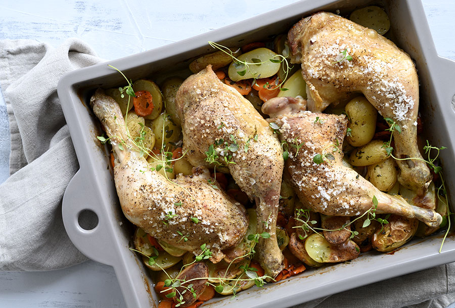
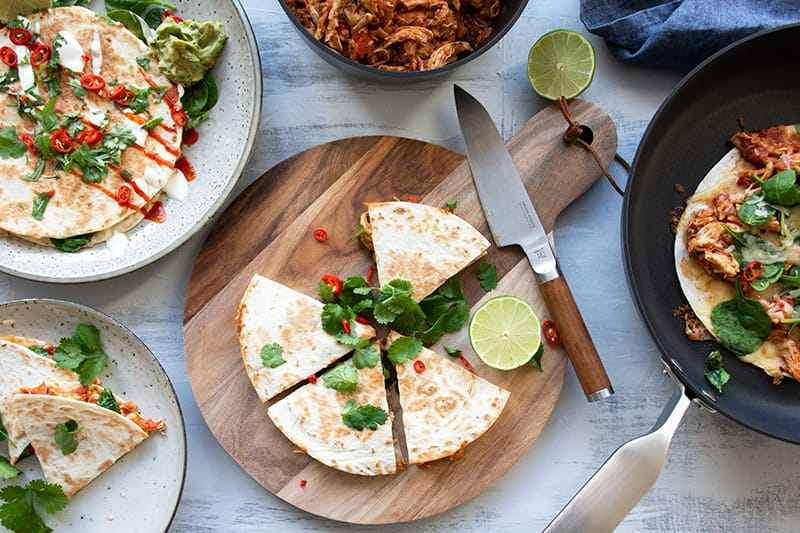
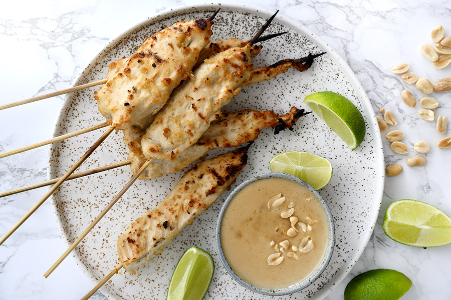

Bagt kylling med kartofler og krydderurter - lørdagskylling deluxe

4 pers.
Ingredienser
- 1 kg kylling, overlår og evt bryst med skind
- 800 g kartofler, skrubbede
- 4 gulerødder, skrællede og skiveskåret
- 1 tsk timian, tørret
- 1 spsk frisk rosmarin, finthakket
- 1 dl grøntsagsbouillon
- flagesalt
- sort peber, friskkværnet
- 1 spsk smør, til at smøre fadet
Tid: 60 minutter
Fremgangsmåde
Smør et ovnfast fad grundigt med smør. Skær kartoflerne i halve og kom kartofler, gulerødder og boullion i fadet, sammen med krydderurterne. Vend det godt sammen.
Krydre kyllingestykkerne godt med salt og peber, læg dem øverst i fadet og bag i en forvarmet ovn ved 175 grader varmluft i ca. 45 minutter eller til kartoflerne er møre og kyllingen gennemstegt og med sprødt skind.
Drys med friske krydderurter inden servering og server med en god blandet salat og lækkert brød.
Kyllinge Quesadillas med krydret tomatsauce og spinat

4 pers.
Ingredienser
- 1 løg, finthakket
- 4 fed hvidløg, finthakket
- 1 spsk olivenolie
- 2 kyllingebryst
- 1 tsk koriander, stødt
- 1 tsk spidskommen
- 1/2 dl grøntsagsbouillon
- 1 dåse hakkede tomater
- 1/2 rød chili, finthakket (mild/mellem styrke)
- salt
- sort peber, friskkværnet
Dertil
- 1 pakke tortillas pandekager, (8 stk)
- 200 g cheddar ost, friskrevet
- 125 g baby spinat
Tilbehør
- 1 avocado
- 1/2 rød chili, skåret i ringe
- cremefraiche 18 %
- sriracha chilisauce
- 2 lime
- 2 håndfulde frisk koriander
Tid: 40 minutter
Fremgangsmåde
Pulled kylling i krydret tomatsauce
Sauter løg og hvidløg i olivenolie til de er bløde og klare. Tilsæt spidskommen og koriander, som varmes godt igennem, hvorefter kylling, hakkede tomater, chili og grøntsagsboullion tilsættes. Lad det simre uden låg i 30 minutter.
Tag kyllingen op af gryden og riv det møre kyllingekød i trevler med to gafler. Lad imens saucen koge yderligere ind uden låg, til væden fordamper og saucen tyknes.
Vend det møre kyllingekød med saucen.
Samle Quesadilla
Smør en tortilla pandekage med kylling og tomatsauce, drys med cheddar og lidt spinat, læg en tortilla pandekager over og steg den på begge sider på panden ved høj varme på begge sider, til pandekagen er lidt sprød og osten er smeltet.
Fortsæt til der er tilberedt 4 quesadillas.
Skær ud i trekanter, eller anret som her i halve med de skønneste toppings.
Kyllingesatay

4 pers.
Ingredienser
- 400 g kyllingefilet
- 1 dl kokosmælk
- 60 g peanuts
- 1 tsk ingefær, friskrevet
- 1 fed hvidløg, presset
- chiliflager, efter smag
- 1 tsk soja
Tid: 1 time og 15 minutter
Fremgangsmåde
Kom kokosmælk, peanuts, ingefær, chiliflager og soya i en blender eller minihakker og kør til peanuts er finthakket.
Skær kyllingefileterne ud i 8 aflange strimler, som vendes i marinaden. Stil på køl i en skål med låg i en time eller natten over.
Sæt kyllingerne på iblødsatte* træspyd. Grill de lækre kyllingesatay spyd i omkring 5 minutter, vend dem undervejs.
Har man ikke en grill kan de også tilberedes ved 175 grader varmluft i ovn i ca 18-20 minutter og på en pande stegt i lidt olie til de er gennemstegt.
*hvis grillspydene er lavet af træ, så læg dem i et fad med vand i en times tid, så de ikke brænder på på grillen.